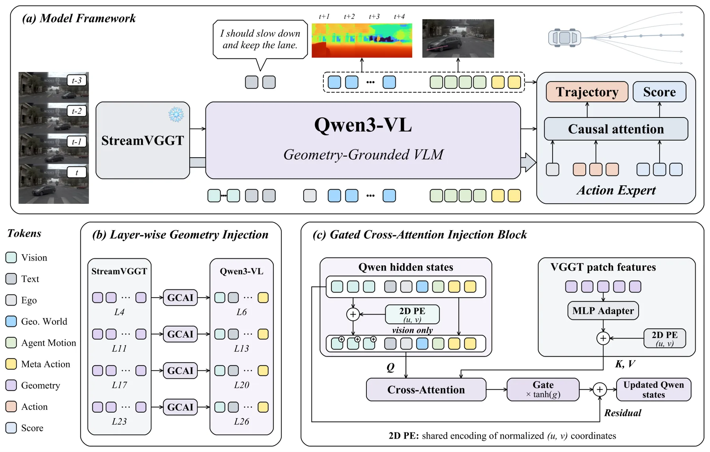
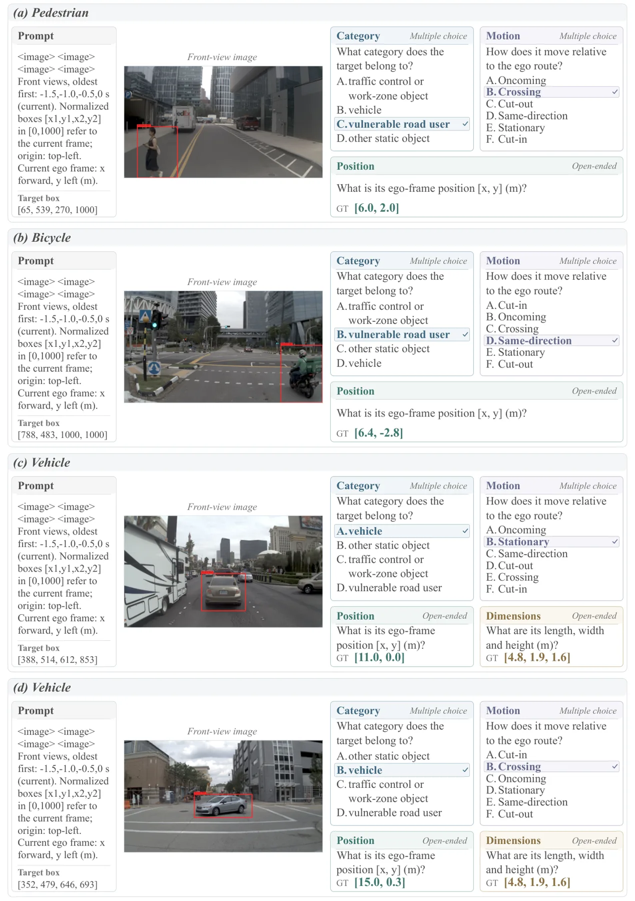
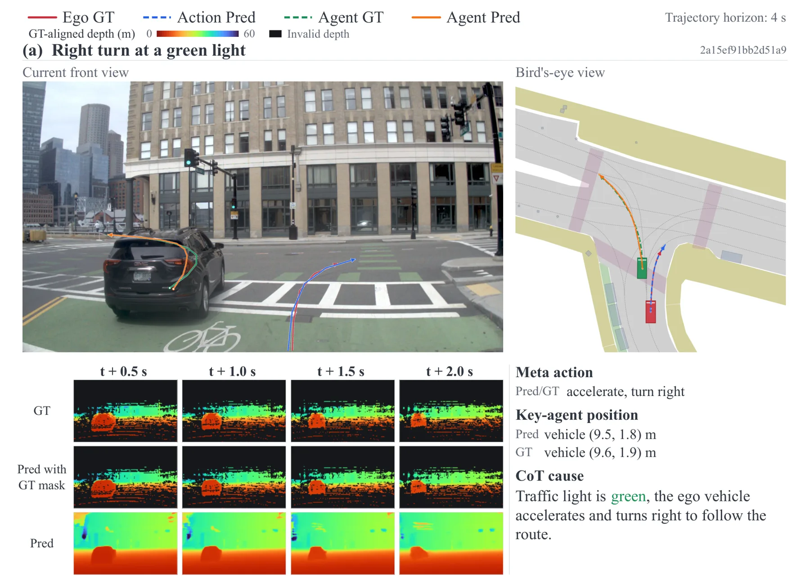
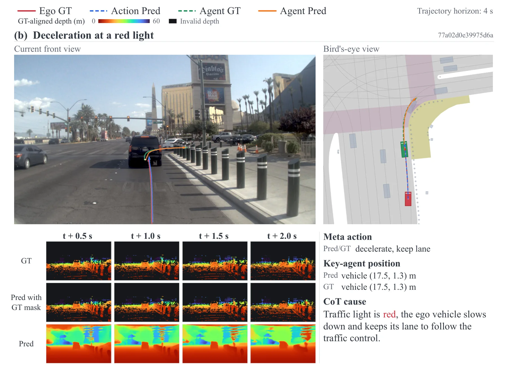
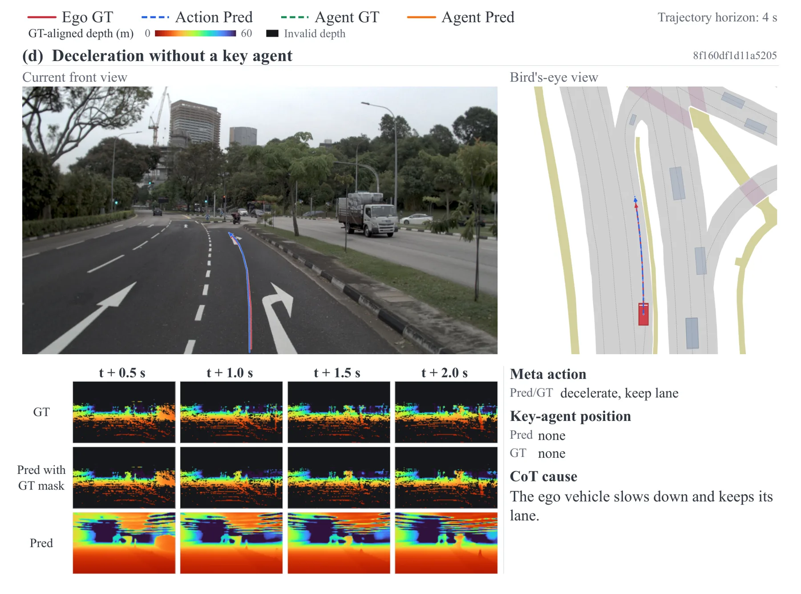

GeoVLDrive：把驾驶推理锚在三维几何上的 VLA 规划器
GeoVLDrive: Geometry-Grounded Vision-Language Reasoning for Autonomous Driving
一句话：把「未来几何 → 关键目标运动 → 元动作」做成三条有向依赖的潜变量链，再把冻结 StreamVGGT 的多层几何特征按层注入 Qwen3-VL，最后让动作专家一边出轨迹一边让候选互相「打分」。
PDMS
EPDMS
accuracy
PDMS
作者、单位与技术谱系 · Research context
作者与单位
研究脉络
- iPad（Iterative Proposal-centric End-to-End Autonomous Driving）方法上游（规划形式与训练目标）关系：直接继承：候选轨迹的 proposal 形式、winner-takes-all 回归与多阶段精化都沿用 iPad，本篇把读出从 MLP 换成场景感知 + 交互的评分 token。[本文 §2.1 / §3.3]
- GeoWorldAD（Geometry World Action Model）方法基座（同团队的几何世界模型）关系：技术依赖与共同署名：本篇用其 StreamVGGT 几何编码与未来深度损失形式，核心作者 Songyan Zhang、Hanbing Li、Guang Chen、Hangjun Ye、Kuiyuan Yang、Chen Lv 与本篇重合。[本文参考文献 [49]]
- SGDrive（scene/agent/goal query + 占用监督）方法上游（最接近的设计）关系：对照与区分：SGDrive 同样在 VLM 内监督场景、目标、目标位姿三组 query，但用块状掩码禁止互看、靠占用监督学几何；本篇改为几何注入 + 有向互看 + 未来深度预测。[本文 §2.2]
- VGGDrive（多层几何交叉注意力注入）方法上游（注入方式）关系：机制参照：多层几何特征注入 VLM 的做法来自 VGGDrive，本篇在此基础上加了逐层门控与共享位置编码。[本文 §2.1 / §3.1]
合作网络
- 小米与 NTU / 密苏里大学的合作署名Xiaomi Corporation → Nanyang Technological University / University of Missouri关系：共同署名（同一篇论文的多单位署名）[arXiv 官方 HTML]
- GeoWorldAD 与本篇的共同作者GeoWorldAD（arXiv:2607.17521） → GeoVLDrive关系：共同署名（6 位作者重合）+ 技术依赖（StreamVGGT 几何与未来深度损失）[本文参考文献 [49]]
- iPad 与本篇的共同作者iPad（arXiv:2505.15111） → GeoVLDrive关系：共同署名（Chen Lv）+ 技术依赖（proposal 形式与 WTA 训练）[本文参考文献 [12]]
单位、共同署名与技术依赖均取自论文首页与参考文献列表；GeoWorldAD 的 6 位作者重合是原文可核验事实，iPad 的 Chen Lv 为同名署名，本文未据同名推断职务或师生关系。
方法本质拆解 · What actually changed
是不是微调？
是「冻结几何编码器 + 微调语言骨干 + 从零训新头」的混合方案：StreamVGGT 全程冻结，Qwen3-VL-2B 参与四阶段训练（语义-几何对齐、几何与运动监督、潜链监督、潜链与动作专家联合），动作专家与各预测头是新初始化的；动作专家一侧所有 VLM 派生输入都 detach，规划梯度不回传语言模型。
有没有额外约束？
约束集中在两处：一是潜 CoT 的有向注意力掩码（几何只看自己与更早时域，运动可读同时或更早的几何，元动作可读两者，反向禁止），二是动作专家的因果联合注意力（推理 → 动作 → 评分单向，评分 token 之间可互看）。输入侧还有共享归一化 (u,v) 正弦编码作为几何与视觉特征的共同参照，以及每层一个可学习门控标量控制几何注入强度。
推理/后端到底做了什么？
推理是一次骨干前向算出潜 CoT 三组状态，再由动作专家经多阶段精化解码 R 条候选轨迹并用评分 token 选出最高分者；没有测试时优化、没有在线学习，也不需要真值几何——未来几何的监督只在训练期。NAVSIM 评测走非反应式伪仿真单阶段，不构成闭环反馈。
方法本质是什么？
本质是把「几何证据」与「推理结构」分开处理：几何证据用冻结 3D 基础模型的多层特征逐层注入，推理结构用三条有向依赖的潜变量链显式约束，最后由一个与语言模型解耦的动作专家负责生成与评分。它没有让 VLM 变大、也没有引入可微渲染或世界模型采样，收益来自「表征接得对 + 依赖方向对」。
输入前视四帧、驾驶提示与自车状态，冻结 StreamVGGT 的几何特征逐层门控注入 Qwen3-VL，潜 CoT 按几何→运动→元动作单向依赖推理，动作专家出多候选轨迹并靠候选间交互的评分 token 选优。

结论与问题Conclusion & Motivation
核心结论
GeoVLDrive 的结论是：VLA 规划器的语义推理要真正「落地」，需要的不是更大的语言模型，而是把几何特征按深度注入骨干、并把「未来几何 → 目标运动 → 元动作」组织成有向依赖的潜变量链。实现上它把冻结 StreamVGGT 的第 4/11/17/23 层特征，用带门控 tanh(g) 的交叉注意力注入 Qwen3-VL-2B 的第 6/13/20/26 层，并给视觉 query 与几何 key/value 加上共享的归一化 (u,v) 正弦位置编码做空间对齐；潜 CoT 用三个分别监督的组（未来几何用 32 个潜状态经时间条件残差解码器更新几何特征、再解出未来深度与置信度；关键目标用「类别 + 当前位置 + 未来偏移」潜状态；元动作用纵向/横向两个 token），并用有向掩码限制「运动可读几何、元动作可读两者，反向禁止」。结果在 2B 骨干 + 单前视 + 纯监督下拿到 NAVSIM v1 91.8 PDMS、v2 90.9 EPDMS，3DQA 89.2%。
动机与问题
驾驶需要推理交通参与者、场景几何与未来演化，而现有三类框架各有缺口：纯 VLA 策略把图像与文本直接映射到轨迹，语义强但推理不落在 3D 结构上；几何世界动作模型（如 GeoWorldAD）先把当前几何编码并预测其演化，规划条件在几何表征上，但缺少分层的语义推理；几何锚定 VLA（如 VGGDrive）把观测场景的三维特征注入 VLM，却不显式建模「未来」几何与目标运动。真正的难点是把「场景级几何预测」与「目标级运动推理、自车机动选择」接起来：它们的时间尺度不同（几何 2 s、运动与规划 4 s）、语义粒度不同，如果放在同一组潜变量里无约束地互相注意，就会互相干扰。作者给出的解法是分层 + 有向掩码。
方法Method
方法总览
骨干是 Qwen3-VL-2B-Instruct + 冻结 StreamVGGT：后者聚合前视四帧出当前帧多层几何特征，前者同时编码图像、驾驶提示与自车状态。几何注入用 4 对 (几何层, VLM 层) 的门控交叉注意力，配共享 2D 正弦位置编码。潜 CoT 分三组：未来几何组在每个预测时域 kδ 用 32 个潜状态经时间条件残差解码器更新几何特征，再由几何解码器出未来深度与置信度（损失仿 VGGT/GeoWorldAD 的深度 + 置信度 + 多尺度梯度）；目标运动组用 [类别; 当前位置; 未来偏移] 潜状态，位置重建为 p̂0=g0(d0)、p̂j=p̂0+gΔ(dj)，配 CE + SmoothL1 + 余弦方向损失；元动作组用两个 token 表示纵向/横向意图，CE 监督。动作专家是独立 transformer：读潜推理状态、自车 token、R×J 动作 token 与 R 个评分 token，多层几何/语义特征在对应层拼接，按因果联合注意力掩码更新，多阶段精化后解码 R 条候选轨迹，用 winner-takes-all 回归；评分 token 可直看本候选的动作、并可跨候选互看，最后 MLP 出标量分数。
关键技术细节
三个细节支撑了上面的数字。第一，门控注入是「残差 + 标量门」：X'_m = X_m + tanh(g_m)·Attn(LN(X_m), φ_m(G^ℓ), φ_m(G^ℓ))，g_m 每层一个可学习标量，初始接近 0，因此几何信息是逐层「按需开启」，不会一次性冲掉语言模型的语义表征；位置编码同时加在视觉 query 与几何 K/V 上，让不同分辨率的特征网格有共同图像平面参照。第二，潜 CoT 的掩码是「单向 + 同组双向」：几何 token 只看自己与更早时域，运动 token 彼此双向但只能读同时或更早的几何，元动作 token 可读两者；换成全双向后 PDMS 从 91.8 掉到 90.8，证明方向性是有效约束而非实现细节。第三，动作专家把所有 VLM 派生输入 detach 后再做可训练池化与投影（Qwen 特征按注意力池化压到 64 token），规划梯度不回传 VLM，避免把规划目标污染成「语言模型微调」。评分 token 的注意力被限制为「只看本候选动作 + 可看其他候选的评分 token」，这就是「候选间交互」的实现方式。

实验Experiments
实验设置
规划在 NAVSIM 上评：navtrain 训练、navtest 的 12,146 个场景评测，指标为 v1 的 PDMS（NC/DAC/TTC/Comf./EP 聚合）与 v2 的 EPDMS（增加 DDC/TLC/LK/HC/EC）；推理只用前视图像与自车状态，不用 LiDAR。问答在 LingoQA（Lingo-Judge）与作者新建的 NAVSIM 3DQA 上评：3DQA 每样本给四帧前视（相对当前 −1.5/−1.0/−0.5/0 s）+ 当前帧归一化 2D 框，四类问题（粗类别、地面系米制位置、车辆尺寸、运动行为），约 128 万 QA（112 万训练 / 16.5 万验证，来自约 9.5 万锚帧），位置按 L2≤1 m、尺寸按三轴误差 ≤0.5 m、类别与运动按精确匹配计分，总体为四项等权平均。训练四阶段：语义-几何对齐 3 epoch、未来几何与目标运动 5 epoch、监督潜链 10 epoch、潜链与动作专家联合 30 epoch，用 NVIDIA H20。
实验数字与比较
NAVSIM v1（表 1）：91.8 PDMS、NC 98.7、DAC 98.0、TTC 95.3、EP 88.1；对照 iPad 91.7、DriveWorld-VLA 91.3、LaST-VLA-8B（RL）91.3、GeoWorldAD 91.0、DriveVLA-W0 90.2、CoWorld-VLA 90.0、VGGDrive 88.8、SGDrive(SFT) 87.4。NAVSIM v2（表 2）：90.9 EPDMS，EP 91.4，对照 GeoWorldAD 90.4、PerceptDrive 90.2、LaST-VLA-8B(RL) 87.1。问答（表 3）：3DQA 总体 89.2 对同数据同调度微调的 Qwen3-VL-2B 84.6（+4.6），其中类别 98.0、运动 91.0、位置 76.7（基线 66.8）、尺寸 89.1；未微调的 Qwen3-VL-2B 只有 34.2、8B 为 54.4。LingoQA 68.6 对 67.0。消融（表 4/5/6）：几何注入把 3DQA 从 84.6 提到 87.5、加位置编码到 89.2；潜链三组依次 90.1→90.5→90.7→91.0，再加几何注入 91.8；有向掩码 91.8 对双向 90.8；评分 MLP 90.2→动作 token 90.4→场景感知 90.8→跨候选 91.8。
消融/失败边界
表 5(a) 是一条清晰的阶梯：基线 90.1，加世界（未来几何）90.5，加运动 90.7，加元动作 91.0，再加几何注入 91.8；但作者诚实指出最大变化来自 EP（+2.1），而 DAC +0.2、NC −0.3、TTC −0.4——也就是说这套结构主要在「推进得更果断」，而不是「更安全」。表 5(b) 证明方向性有效：改为双向 90.8。表 6 把评分机制拆开：MLP 90.2、动作-only token 90.4、场景感知 90.8、跨候选交互 91.8，说明「候选之间互相看见」贡献了最后 1.0。失败边界明确：单前视相机、每场景最多一个关键目标、未来几何只监督 2 s 而运动与规划 4 s、NAVSIM 是非反应式伪仿真、训练目标跟随记录的未来（不是多模态未来分布）。作者也承认 3DQA 的位置精度只有 76.7%，米制定位仍是短板。
局限与迁移Limitations & Transfer
局限与待核验
作者明确承认：单前视输入、最多一个关键目标、几何 2 s / 运动与规划 4 s 的时间跨度、NAVSIM 非反应式伪仿真、训练目标跟随单一记录未来；未来工作列了环视输入、多智能体交互、更长几何时域、多模态未来与闭环评测。我们的待核验项：第一，91.8 与 iPad 的 91.7 只差 0.1，而 iPad 不是 VLA，因此「几何 + 潜 CoT」相对于成熟 proposal planner 的净收益需要看更多场景子集，论文只给了 12,146 场景的整体分；第二，PDMS 增长集中在 EP、NC/TTC 略降，若下游更看重安全指标，这个 trade-off 需要单独权衡；第三，3DQA 是自建数据集且「将在 camera-ready 时公开」，当前无法独立核验问题构造与标注噪声，位置精度 76.7% 也说明米制理解仍弱；第四，四阶段训练的具体 GPU 数与 batch 只在补充材料表 S3，且用 H20，复现成本与可重复性待确认。
与你研究路线的关系
这篇对我们有三块可直接借的模块。其一，「多层几何特征按深度注入语言骨干 + 共享 2D 位置编码」是一种轻量的几何-语义对齐方式，不需要改骨干结构；我们若要把学习型几何先验接进语义/决策模块，这个门控残差与位置编码的组合是最小改动方案。其二，有向掩码的潜变量链（几何 → 运动 → 动作，单向可读、同组双向）解决了「多组潜状态互相污染」的问题，与我们后端把「状态估计 / 不确定性 / 决策」分层建模的思路一致，可作为多任务联合训练时的注意力约束模板。其三，评分 token 的「场景感知 + 候选间交互」是选择式规划的通用改进：在我们做多假设位姿/多轨迹评估时，让候选之间互相看见比各自独立打分更合理。下一步最小实验：在我们已有的序列上，固定前端，只把「候选独立打分」换成「候选间可交互的评分 token」，比较选优后的 ATE/成功率与失败模式，验证候选交互是否带来稳定的选择收益。







